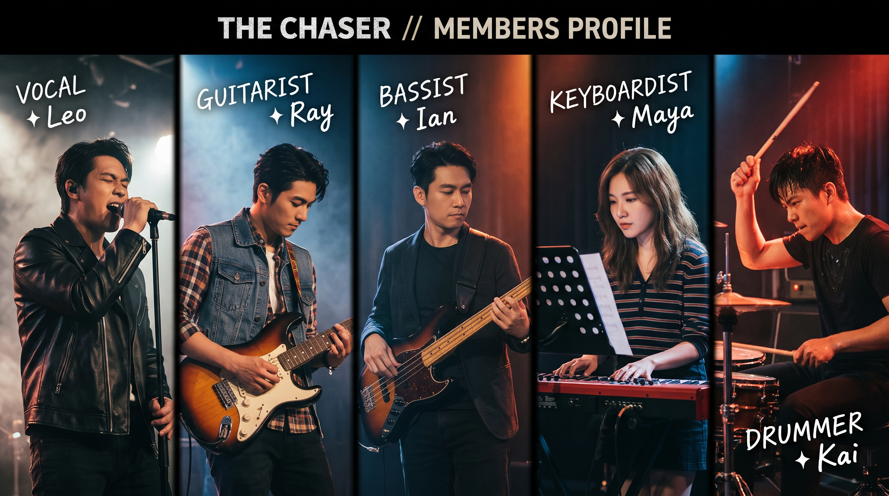

Leo 主唱
用聲音帶路，唱出每段旅程的心情。
THE ROAD SO FAR · 01
THE CHASER 從小小的地下室開始，把日常裡的悸動寫進旋律，也把每次排練的汗水留在節拍裡。
後來，我們把樂器裝上車，從熟悉的街道一路開向陌生的城市。對我們來說，每一站都不是終點，而是下一首歌的起點。
EVERY MILE HAS A SOUNDFIVE MINDS, ONE SOUND · 02
每個人的節奏都不同，合在一起，就是 THE CHASER。

用聲音帶路，唱出每段旅程的心情。
讓吉他的聲線，替每座城市留下記號。
穩穩接住每一道旋律，讓音樂持續前進。
在音符之間添上色彩，打開新的風景。
用每一次落鼓，為旅程定下前進的步伐。
MILES BECOME MEMORIES · 03
每一次抵達，都讓我們更靠近下一個夢想。
ON THE MAP
從台灣出發，THE CHASER 把歌聲帶到東京、新加坡、首爾、倫敦、紐約與雪梨。不同的語言、不同的街景，讓每一場演出都成為彼此相遇的理由。
查看巡演倒數 →